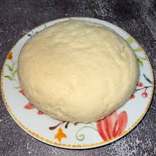

Ugali

Description
Ugali is a meal made with maize flour (corn meal) and is very popular in East Africa. It
a simple meal with just two ingredients - water and maize flour. You can think of it as
a very thick porrige. It is usually served with a stew of vegetables usually kale.
The Ugali made with this recipe is for a serving of two people.
Ingredients
- Half a kg of maize flour
- Half a liter of water
Steps
- Bring the water to boil in a small sufuria (cooking pot made of aluminium).
- Add the flour into the water in small quantities while stirring with a ladle.
- Once you have a very thick mixture, mould into a cone shape with the ladle.
- Turn down the heat source and leave for five minutes
- Remove the sufuria from the heat source and turn it upside down on a serving tray.
- If all went well, the ugali should fall neatly on the tray. Serve while hot with a stew of your choice.